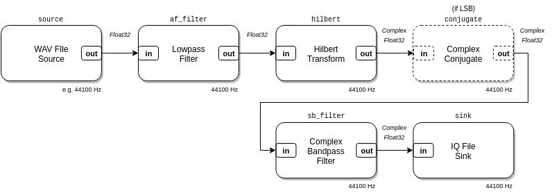

wavfile_ssb_modulator.luaThis example is a file-based
Single-Sideband
(SSB) modulator. It takes a single channel WAV file audio input, and produces a
binary IQ file (f32le format) output with the single-sideband modulated
audio. This example doesn’t use the RTL-SDR at all, but instead demonstrates
how you can build file-based command-line utilities with modulation,
demodulation, decoding, file conversion, etc. flow graphs that run to
completion.
This single-sideband modulator composition is available in LuaRadio as the
SSBModulator block.

local radio = require('radio')
if #arg < 4 then
io.stderr:write("Usage: " .. arg[0] .. " <WAV file in> <IQ f32le file out> <bandwidth> <sideband>\n")
os.exit(1)
end
assert(arg[4] == "usb" or arg[4] == "lsb", "Sideband should be 'lsb' or 'usb'.")
local wav_filepath = arg[1]
local iq_filepath = arg[2]
local bandwidth = tonumber(arg[3])
local sideband = arg[4]
-- Blocks
local source = radio.WAVFileSource(wav_filepath, 1)
local af_filter = radio.LowpassFilterBlock(128, bandwidth)
local hilbert = radio.HilbertTransformBlock(129)
local conjugate = radio.ComplexConjugateBlock()
local sb_filter = radio.ComplexBandpassFilterBlock(129, (sideband == "lsb") and {-bandwidth, 0}
or {0, bandwidth})
local sink = radio.IQFileSink(iq_filepath, 'f32le')
-- Connections
local top = radio.CompositeBlock()
if sideband == "lsb" then
top:connect(source, af_filter, hilbert, conjugate, sb_filter, sink)
else
top:connect(source, af_filter, hilbert, sb_filter, sink)
end
top:run()
Usage: examples/wavfile_ssb_modulator.lua <WAV file in> <IQ f32le file out> <bandwidth> <sideband>
Modulate test.wav into test.iq, with 3 kHz bandwidth and lower sideband:
$ ./luaradio examples/wavfile_ssb_modulator.lua test.wav test.iq 3e3 lsb